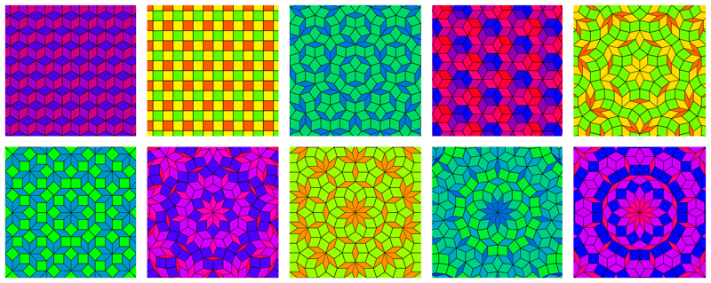
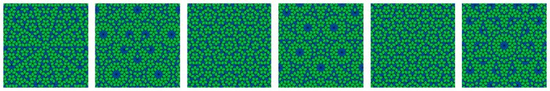

多重網格¶
使用 de Bruijn ( 公式名稱 : 德布魯因圖 ) 1981 來生成填充畫布的圖形 Penrose Tilings 彭羅斯拼磚。這個生成器將一個超維度網格點陣投影到一個二維度平面上，給出了一些非常酷的圖案。除了看起來很酷之外，生成的模式還有一些有趣且有用的設定：
會產生菱形，菱形或矩形。這對 3D 創作者非常有用。
對於除 3、4 和 6 之外的所有維度，結果都是非週期規律性的，這表示它永遠不會在圖像的寬度或高度上重複。
其結果確實圍繞中心對稱重複。對稱重複的數量與投影的維度數量相同。
由此產生的圖案在自然界中以準晶體的形態出現。
形狀 ( 標籤 )¶
核心的計算方法。預設值會生成星形的彭羅斯拼磚 ( Star Penrose Tiling )。
- 尺寸
晶格的維度數。 3 是立方體的格子，4 是正方體的格子，5 是五角星的格子，依此類推。
 具有不同維度的多重網格，從 3 開始到 12 結束。3d、4d 和 6d 使用相交顏色因子著色，而其餘部分僅使用比率。在 3d、4d 和 6d 中，所有的菱形都具有相同的比例。¶
- 分割數量
有效地縮小。這是圖像中心和角落之間寬度的長度的分割數量。然後，這用於確定為每個維度投影了多少條線。
- 偏移
這控制了每組線條從圖像中心偏移的程度。更改此數值會明顯更改同一維度內的模式。
 具有 5 個維度和 20 個分區的多重網格。從左到右的偏移量是：0.3、0.1、0.2（星形彭羅斯拼磚）、0.3、0.4（放射形彭羅斯拼磚）、0.48。¶
線條 ( 標籤 )¶
- 線條寬度
菱形輪廓的寬度（以圖像像素為單位）。由於菱形的繪製方式，在 0 像素時仍然可以看到一條極細的線。
- 連接線條
可以選擇在形狀的不同邊之間繪製線條。通常用於顯示特定的拼磚具有某些應對配合的規則，並且提供了很酷的效果。
- 銳角
在連接線條類型設定為銳角時會在邊界之間繪製圓弧。
- 鈍角
在連接線條類型設定為鈍角時會在邊界之間繪製圓弧。
- 十字形
繪製兩條在每個菱形邊之間十字線。特別有趣的是線條寬度設定為 0。
色彩 ( 標籤 )¶
顯示了星形彭羅斯拼磚，帶有 29 個分度和銳角連接線。複雜的漸變以及比率和索引對圖形進行著色的組合，產生了些可從填充層獲得的更令人印象深刻的結果。¶
這部分控制所有顏色，所有顏色都組合在一起，因為 Krita 的顏色按鈕可以將顏色拖放到另一個顏色。可以更改輪廓和連接線的顏色，並且有用於為各個菱形著色的漸變。
顏色因素決定了每個菱形的哪些屬性，用於確定其顏色。該值用作乘數，最終產生可用於從漸層中獲取的數值。
- 寬高比
這會根據菱形的比例為菱形著色。細菱形比例低，粗菱形比例高，完美正方形比例最大。
- 相交
根據菱形的相交線為菱形著色。實際上，這取決於菱形位於超晶格的哪一側為菱形著色，若將維度設定為 3 時特別明顯。
- 索引
根據中心相交線的索引為菱形著色。實際上，靠近中心的菱形將具有較低的數值，而遠離中心的菱形將具有較高的數值。